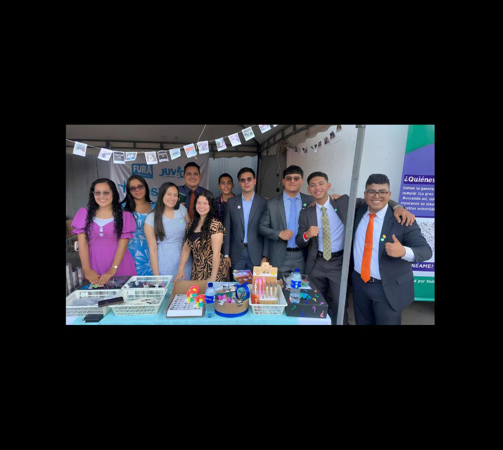

El pastor Alcides Peña, entonces estudiante de la Universidad Industrial de Santander, y un grupo de jóvenes cristianos de diferentes iglesias de Bucaramanga impulsaron el Proyecto Evangelístico Universidades de Bucaramanga. El propósito era directo: llevar la palabra de Dios a las universidades de la ciudad, comenzando por la UIS. Se iniciaron actividades en áreas verdes y auditorios facilitados por directivos, con encuentros de estudio bíblico, dramatizaciones y evangelismo.
Con el paso del tiempo, muchos de los estudiantes fundadores se graduaron y el proyecto tuvo una temporada de pausa.
El Señor permitió retomar nuevamente las actividades evangelísticas dentro de la Universidad Industrial de Santander.
A través de la oración, se pidió a Dios un nombre que expresara directamente el propósito del proyecto y su relación con la Gran Comisión. Así nació el significado actual: Fuerza Universitaria Restaurando, Rescatando y Renovando almas. Ese mismo año, FURA comenzó a ampliarse a más universidades de la ciudad.
FURA llega a la Universidad de Pamplona. En julio, se realiza en Bucaramanga el primer culto de estudiantes, con más de 250 jóvenes de las zonas 2, 57 y 103. Ese mismo año, FURA participa con un stand en la Convención de Jóvenes en Bucaramanga y realiza su primer viaje misionero de apoyo a Pamplona.
Se inaugura FURA en la Universidad Militar Nueva Granada y en la Universidad Nacional de Colombia, ambas en Bogotá. FURA participa en la Convención Nacional del MMM en Cali, presentando el proyecto ante líderes y jóvenes de toda Colombia.
Lo que comenzó en Bucaramanga hoy trasciende fronteras. FURA tiene presencia activa en tres nuevas universidades fuera de la ciudad de origen, además de sus cuatro grupos en Bucaramanga.
Bucaramanga · sede original, 2006
Bucaramanga
Bucaramanga
Bucaramanga
Pamplona · desde 2025
Bogotá · desde 2026
Bogotá · desde 2026
En 2025 participamos en la Convención de Jóvenes en Bucaramanga con un stand, y en 2026 estuvimos presentes en la Convención Nacional del MMM en Cali. Cada evento ha sido una oportunidad para presentar FURA ante líderes y jóvenes de toda Colombia, y ha resultado en nuevas aperturas de FURA en diferentes universidades del país.
